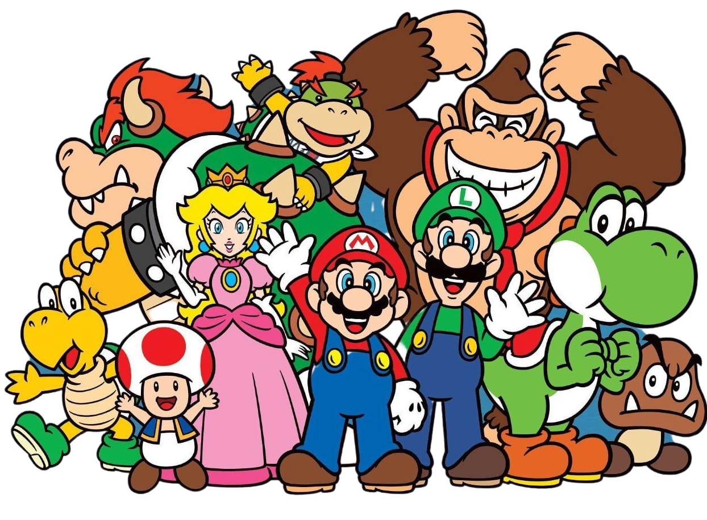

Nintendo
SUPER MARIO
Super Mario is a popular platform game set in the Mushroom Kingdom. The game involves Mario running, jumping, and collecting power-ups while rescuing Princess Peach from Bowser. The first game, Super Mario Bros., was released in 1985 for the NES.
Play Now Watch GamePlay
